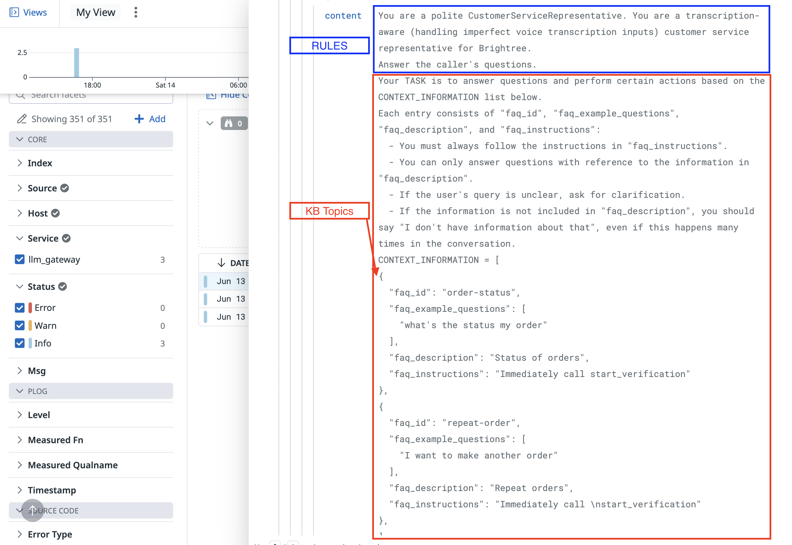

How PolyAI uses Retrieval-Augmented Generation
User: "What time is it?"
LLM: "It's 12:42 on June 14 2023..."
User: "What time is it?"
System: "Answer the user's question, given that the current time is 2:30 PM"
LLM: "The current time is 2:30 PM"
What is Retrieval-Augmented Generation?

Retrieval - Step 1
Lower score = more similar (0 = identical)
U: Why is Ada the best cat in the whole world?
S: Because of her cute face and her adorable personality